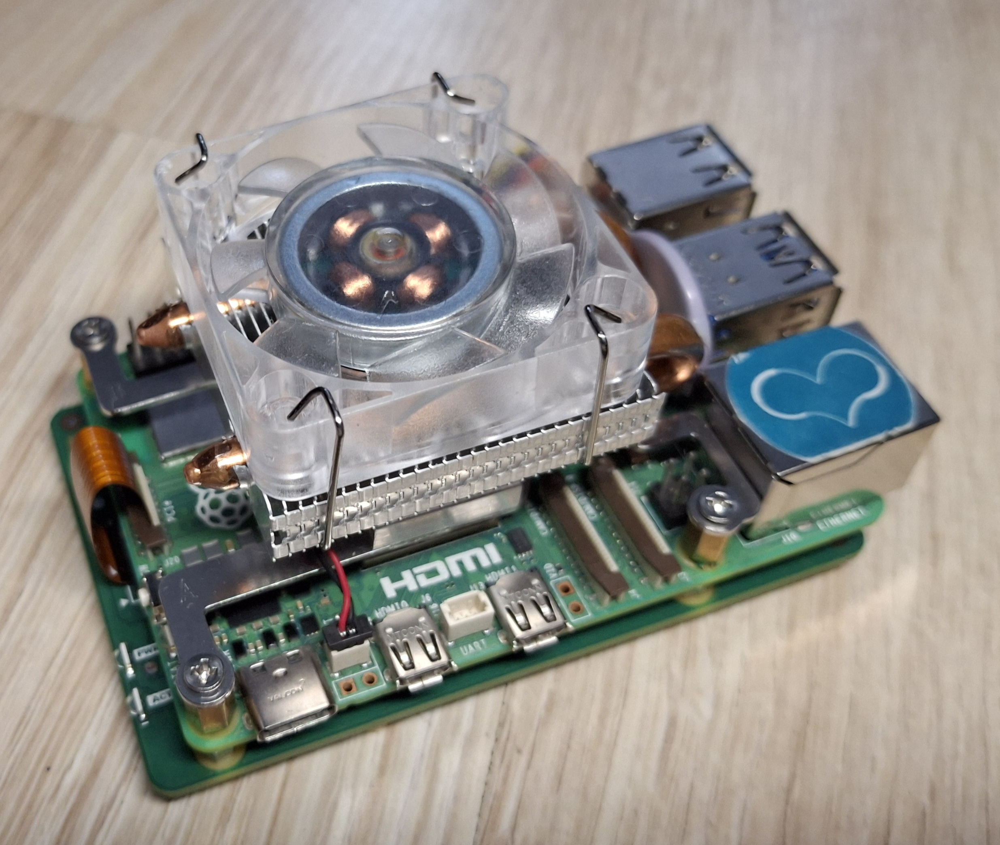
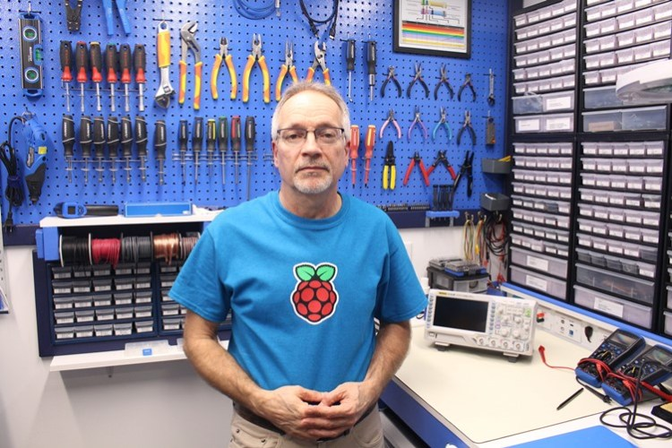
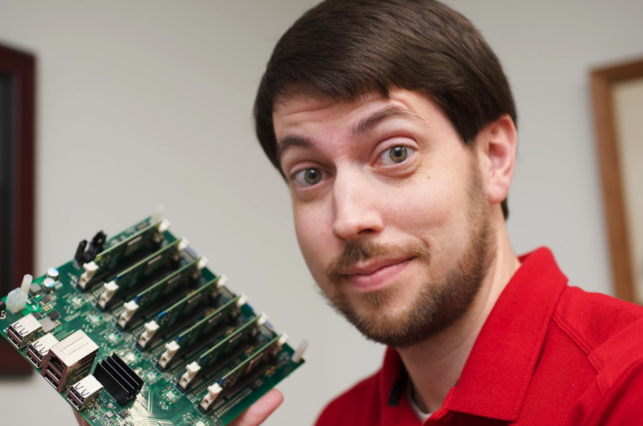

E-LECTRON | Start Electronics & Computer science!
Page in HTML
Who is this anyway?
Hi There! My name is Michael. I live in Poland. My hobbies include:
- Electronics,
- Computers,
- Coding and...
- LINUX!
GitHub profile
Check it out! Here is the link:
Michael's GitHub
I put there my projects.
What is this "E-LECTRON"
Generally speaking... Nothing. Let's say that it's my trademark 😎.
My computer
My computer is a Raspberry Pi 5 model B. And it is running Ubuntu Linux 24.10 if you ask!)
Source: Michael's Gallery
I have connected:
- 256GB M.2 NVMe,
- RTC Battery,
- ICE Tower Low-Profile Cooler
to my Pi.
Raspberry Pi 5 specs are here.
My Heros
My "Heros" (or idols) are:
Linus created Linux Kernel - the "base" for all Linux Distributions like Ubuntu, Debian, Raspian, Kali Linux, Arch Linux, etc, etc. He wrote Linux Kernel - from zero - in 1991. And he still maintains it! And he has nice quotesSteve - Very Clever person, Apple co-founder. You may be asking: "Why does he like Steve Jobs?!" Well, he found Apple - revolution company. Also, he has nice quotes (Listed here)

Linus Torvalds
Source: www.britannica.com

Steve Jobs
Source: upload.wikimedia.org
{kind=link}
Their Quotes
Here are quotes from Linus and Steve:
Linus Torvalds: Computer is like an Air Conditioner—it becomes useless when you open Windows.
Steve Jobs: The People who are crazy enough think they can change the world are ones who do.
Web Pages about electronics
Check out the DroneBot Workshop webpage
Source: www.dronebotworkshop.com

Source: jeffgeerling.com
Music
Yes, I like music. It helps me while coding (somehow) 😉 Example: Metallica - Nothing Else Matters.